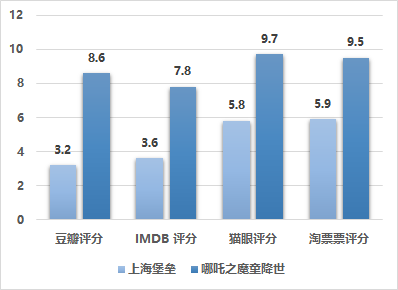
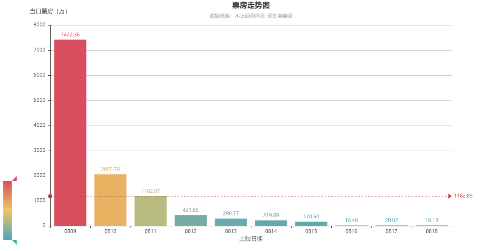
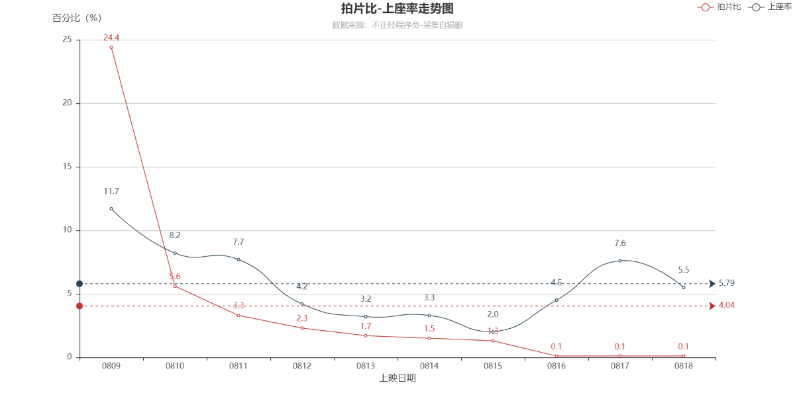
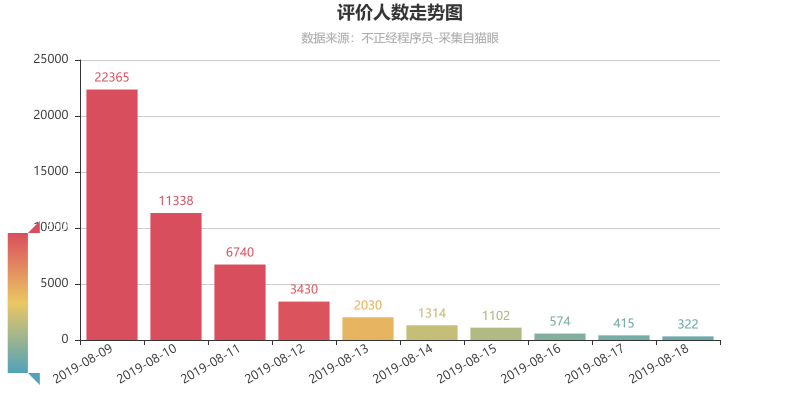
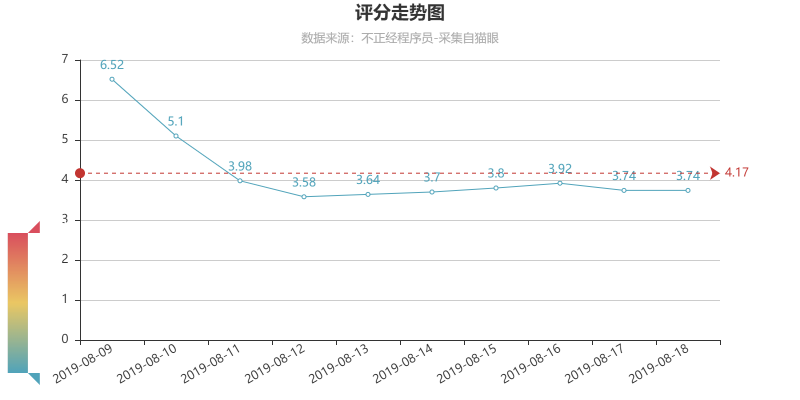
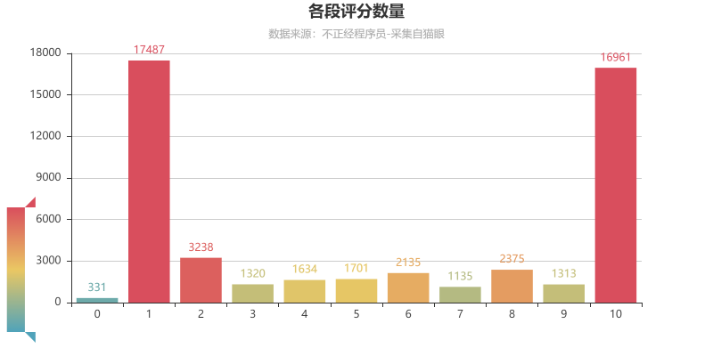
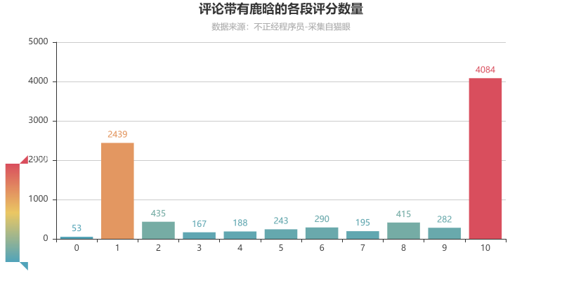
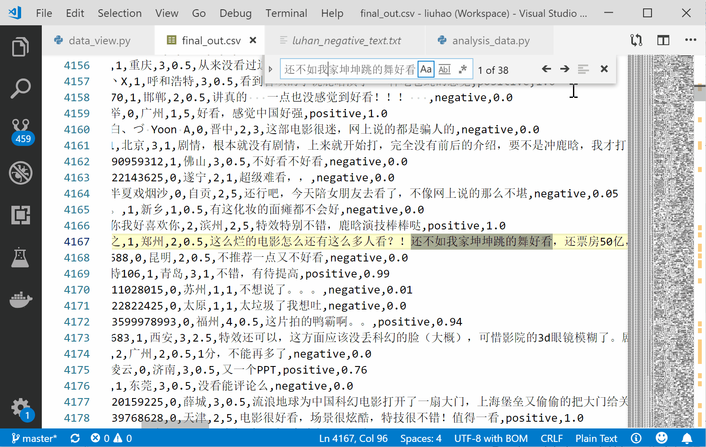

上海堡垒自 8 月 9 日上映以来，票房基本扑街，除了首映日票房达到 7000 多万之外，后面的日子里，票房惨不忍睹。
而且各主流网站的评分同样不忍直视
截止到撰文的前一天，豆瓣评分仅为 3.2，只有在猫眼、淘票票上的评分才将将超过 5 分
这么低的分数意味着什么，不言自明。
而同期上映的《哪吒》在豆瓣的评分可以达到 8.6 分！

是什么原因导致《上海堡垒》在票房、口碑双面扑街的？难道就是因为鹿晗的流量号召力不行了吗？
本文抓取了猫眼 5W+ 评论以及相关票房数据，尝试分析出该片问题到底出在哪里。

图中可以看出，首映当天，观众们不知片片内容好坏，一般都是冲着主演和原著就去看了，所以第一天冲出了 7000 多万的票房，成绩还是不错的。
本以为才开始，没想到是巅峰！
看了首映后的观众，他们的不满意开始在各大网络平台发酵，自然而然的，该片的评分也就下来了。
于是，从第二天开始，该片的票房就开始急转直下！
速度堪比过山车
上映一周后的第八天（8月16日），票房连 20W 都不到。
而哪吒当天的票房是 6867W。
直接差了两个数量级。
票房效果不好，影院自然开始减少排片，毕竟都是要恰饭的

同样的
排片只有在第一天时比较多，在效果不好后
第二天，各影院便开始大幅减少该片的排片，总的平均排片比只有 4%，这还是在第一天排片比为 24.4% 的情况下。
另外上座率也低得不行，平均上座率只有 5.79%。
该片总的趋势就是：
影片差 --> 口碑差 --> 评价低 --> 看得人少 --> 票房低 --> 排片少
简直是一个恶性循环
下面，我们根据 5W 的影评数据进行评论趋势分析。
首先是每日评价人数的趋势

每日评价人数和影片的票房走势基本趋同
下面我们看下每日平均评分的趋势

除了第一天的评分稍高之外，在 8 月 11 日之后，评分一直在 4 底下徘徊
各分段人数分布情况

这里我们看到一个非常奇怪的景观
评分最多的竟然是 1 分和 10 分两个极端的评分
这是明显的 C字形分布
在从豆瓣评分的形状———辨别电影的质量一文中，对 C字形分布的电影持有这样的说法：
“C” 形电影大都是电影上映前期，打五星的水军、电影主演粉丝和打一星的普通观众势不两立，粉丝看到黑子打一星觉得自己必须五星，普通观众觉得粉丝和水军打五星自己必须打一星平衡分数维持公道，于是，一星五星很多，我们就叫它“奇葩电影”吧。
那么本片到底是不是『奇葩电影』
下面我们就看一下评价 1 分的和 10 分的观众分别都说了什么
10分评论分析
好看、很好看、值得一看、不错、特效很棒等字眼，看得出，是在夸赞本片。
具体到到底哪里好，从词云分布来看，大都集中在夸奖特效上。
1 分评论分析
1 分评论里，很多观众就开始直接喷起来了：垃圾、烂片、不好看、太烂了、超烂、辣鸡。
差评的集中区域在于剧情
另外，评论中『流浪地球』出现频率也挺高，相信不少观众拿本片与其进行了对比。
在两张词云图中，有个现象值得回味
『鹿晗』字眼都非常大，好评和差评里都有一大波人提到他。
那么，鹿晗应该为本片的表现负责吗？
网上很多评论都说鹿晗这种流量小生，毁了这部片子
真实情况到底如何，咱也没去看片
咱也不敢说，咱也不敢问
那就看下观众的评论里是怎么说的吧
我们将评论中提到鹿晗的单独筛选出来，对这些评论再进行分析

同样的 1 分和 10 分两个分段的数量最为突出
1 分和 10 分，有两个比较通俗的叫法：无脑黑和无脑粉。
这样说明了一个现象：对于当前一下流量明星，喜欢他们的爱得死去活来，讨厌他们的恨不得他们xxx
这恰恰符合了上面 C型评论里提到的：打五星的水军、电影主演的粉丝和打一星的普通观众，有势不两立的态势
其中 10 分的又要比 1 分的高出一倍左右
说明喜欢鹿晗的观众更多一点
另外一点，评论带有鹿晗且打 10 分的有 4084，占总 10 分数量 16961 的 24.1%
评论带有鹿晗，且只给 1 分的有 2439，占总 1 分（17487）的比重为 13.9%。
也就是说，鹿晗给这部剧带来的正面分数要多于负面分数。
当然，评论里有多少水分，我们不得而知，我们只能根据现有数据进行分析。
上面我们分析出对于鹿晗的评分，主要集中在 1 分和 10 分，也就是要么非常喜欢，要么非常讨厌。
那么两派观众都分别抱有什么观点呢？
喜欢鹿晗的都提到了：好看、喜欢、很好看、特效很棒等字眼
同时大大的『加油』二字，算是支持鹿晗的粉丝对其的鼓励
负面评价里就比较有意思了
除了普通的差评字眼：辣鸡、太烂、烂片外
我们还看到了一些有意思的评论：
要演技没演技
还不如我家坤坤跳的舞好看
能卖出票房就很厉害了
要颜值也没我家坤坤颜值高
坤坤被强行拿来和鹿晗对比
不过，两边的粉丝咱都惹不起
按理说这种长词评论应该不会出现太多
我一度怀疑是我数据采集有问题
当我拿着『还不如我家坤坤跳的舞好看』去原始数据中搜索时

明显地
很多重复的评论
这到底是观众无意复制粘贴的巧合
还是批量产生的评论？
敬请关注下一期的《走进鹿晗》
《上海堡垒》的塌陷已是无法挽回的事实
个人认为鹿晗不该背锅，起码不应该他一个人背锅
该片的剧情、故事性都表现不佳
不过，我觉得以后再使用流量小生时，你既要欢迎他能带来的流量，也要包容他带来的负面影响，最好你能够驾驭他，让他通过你的指导，从此摆脱流量小生的标签。
我们也许可以想象一下，如果《堡垒》上线的第一天，大家发现原来鹿晗的演技这么赞，发现他好像没有那么不堪，这样换来的是让人眼前一亮的惊喜和爆棚的口碑，也许《堡垒》的票房就不会过山车般急转直下了
Tips：
1、本文所有数据来源于猫眼；
2、数据获取使用的最简单的requests模块，绘图使用的pyecharts模块；
3、词云使用在线工具wordart制作，无需代码；
4、关注下发公众号，后台回复『上海』，即可获取本文代码和数据。